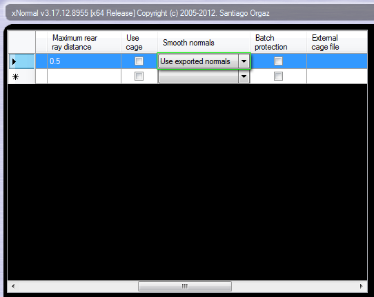
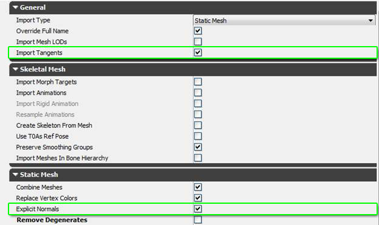
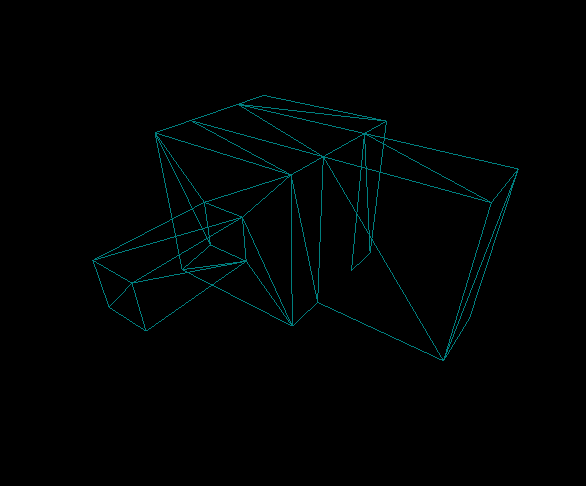
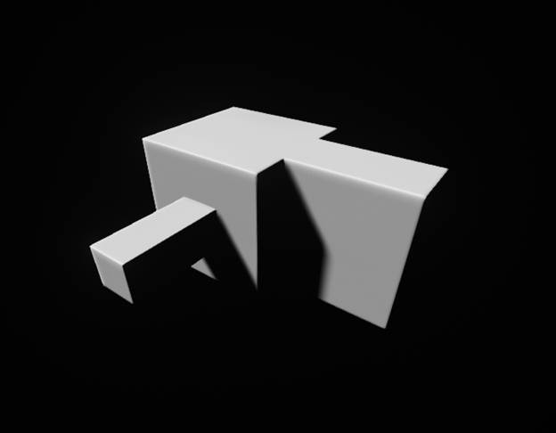

UDN
Search public documentation:
XNormalWorkflowKR
English Translation
日本語訳
中国翻译
Interested in the Unreal Engine?
Visit the Unreal Technology site.
Looking for jobs and company info?
Check out the Epic games site.
Questions about support via UDN?
Contact the UDN Staff
日本語訳
中国翻译
Interested in the Unreal Engine?
Visit the Unreal Technology site.
Looking for jobs and company info?
Check out the Epic games site.
Questions about support via UDN?
Contact the UDN Staff
XNormal 을 사용한 노멀맵 작업방식
문서 변경내역: Jeff Wilson 작성. 홍성진 번역.
개요
XNormal 을 사용하여 노멀맵을 굽는 작업방식은, 예전보다 훨씬 고품질의 셰이딩이 가능합니다. 예전의 노멀맵 작업방식 역시 통하긴 하나, 셰이딩 품질을 높이고자 한다면 이 방법이 현재로서는 최선입니다. 잘못된 셰이딩으로 골치아플 일도 없기에 보조 지오메트리의 수도 확 줄일 수 있습니다.작업방식
- 우선 모델이 하나의 스무딩 그룹으로 이루어져 있나 확인해야 합니다. 트라이앵글 변경에 대한 걱정을 덜기 위해서는, 모디파이어를 사용해서 모델을 트라이앵글화 시키는 것도 도움이 됩니다.
- XNormal 에 쓸 로우폴리 모델을 익스포트할 때는 이 세팅으로 합니다:

중요한 부분은 스무딩 그룹(smoothing groups)과 탄젠트 & 바이노멀(tangents & binormals) 입니다. - XNormal 에 로우폴리 모델을 로드할 때, *Use exported normals* (익스포트된 노멀 사용) 옵션이 켜져 있는지 확인하세요.

- 노멀맵을 구운 후, 전과 *똑같은* FBX 세팅을 사용하여 언리얼에 쓸 로우폴리 모델을 익스포트합니다.
- 모델을 언리얼로 임포트할 때, *Import Tangents* (탄젠트 임포트)와 *Explicit Normals* (명시적 노멀) 옵션을 켭니다.

결과
이 방법을 사용해서 만든 메시 예제입니다. 전보다 폴리곤 수도 훨씬 적은데도 보조 챔퍼나 서브디비전이 없는 것에 주목해 봅시다.
새로운 방법을 사용한 모델입니다.
예전 모델입니다.